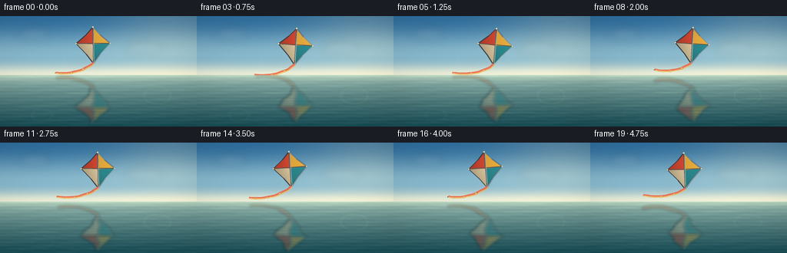
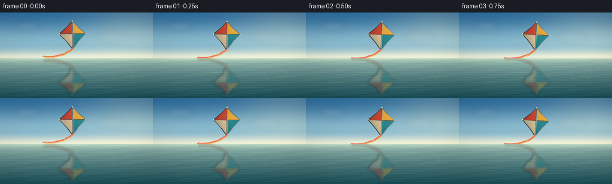

CODING AGENTS AS PIXEL WORLD MODELS
traex/DeepSeek-V4.1-Flash · phygen_057
点击播放 · 原生 RGB 像素
逐轮保存的候选
回放视频、检查图与代码变化。
每份候选均可单独播放。实际图片检查记录在下方工具轨迹中。
候选 01播放与检查图
点击播放 · 原生 RGB 像素

展开代码变化
--- 上一保存版本
+++ 本次保存版本
@@ -0,0 +1,447 @@
+"""Procedural RGB shot: a kite drifting above a calm, reflective pond."""
+
+from __future__ import annotations
+
+import math
+from pathlib import Path
+
+import numpy as np
+from PIL import Image, ImageDraw, ImageFilter
+
+import artifact_io
+
+
+CASE_DIR = Path(__file__).resolve().parent
+WIDTH = 256
+HEIGHT = 144
+FRAMES = 20
+FPS = 4.0
+SS = 4
+RW = WIDTH * SS
+RH = HEIGHT * SS
+HORIZON = 77.0 * SS
+
+
+def _rgb(values: tuple[int, int, int]) -> np.ndarray:
+ return np.asarray(values, dtype=np.float32)
+
+
+def _mix(a: np.ndarray, b: np.ndarray, amount: np.ndarray | float) -> np.ndarray:
+ amount = np.asarray(amount, dtype=np.float32)
+ if amount.ndim == 2:
+ amount = amount[..., None]
+ return a + (b - a) * amount
+
+
+def _smoothstep(edge0: float, edge1: float, value: np.ndarray) -> np.ndarray:
+ x = np.clip((value - edge0) / (edge1 - edge0), 0.0, 1.0)
+ return x * x * (3.0 - 2.0 * x)
+
+
+def _polygon_mask(points: list[tuple[float, float]]) -> np.ndarray:
+ mask = Image.new("L", (RW, RH), 0)
+ ImageDraw.Draw(mask).polygon(points, fill=255)
+ return np.asarray(mask, dtype=np.uint8)
+
+
+def _transform_kite_point(
+ point: tuple[float, float],
+ cx: float,
+ cy: float,
+ angle: float,
+ scale: float,
+) -> tuple[float, float]:
+ ca, sa = math.cos(angle), math.sin(angle)
+ x, y = point[0] * scale, point[1] * scale
+ return (
+ (cx + x * ca - y * sa) * SS,
+ (cy + x * sa + y * ca) * SS,
+ )
+
+
+def _inverse_kite_coordinates(
+ cx: float,
+ cy: float,
+ angle: float,
+ scale: float,
+ bbox: tuple[int, int, int, int],
+) -> tuple[np.ndarray, np.ndarray]:
+ x0, y0, x1, y1 = bbox
+ yy, xx = np.mgrid[y0:y1, x0:x1].astype(np.float32)
+ dx = (xx + 0.5) / SS - cx
+ dy = (yy + 0.5) / SS - cy
+ ca, sa = math.cos(angle), math.sin(angle)
+ lx = (dx * ca + dy * sa) / scale
+ ly = (-dx * sa + dy * ca) / scale
+ return lx, ly
+
+
+def _paint_panel(
+ image: np.ndarray,
+ points: list[tuple[float, float]],
+ color: tuple[int, int, int],
+ cx: float,
+ cy: float,
+ angle: float,
+ scale: float,
+) -> None:
+ mask = _polygon_mask(points)
+ ys, xs = np.nonzero(mask)
+ if not len(xs):
+ return
+ x0, x1 = int(xs.min()), int(xs.max()) + 1
+ y0, y1 = int(ys.min()), int(ys.max()) + 1
+ lx, ly = _inverse_kite_coordinates(cx, cy, angle, scale, (x0, y0, x1, y1))
+
+ # Soft fabric curvature, with the light coming from the upper right.
+ shade = (
+ 0.84
+ + 0.13 * lx / 22.0
+ - 0.045 * ly / 24.0
+ + 0.055 * np.exp(-((lx / 13.0) ** 2 + ((ly + 2.0) / 17.0) ** 2))
+ )
+ shade = np.clip(shade, 0.68, 1.08)[..., None]
+ patch = np.clip(_rgb(color)[None, None, :] * shade, 0, 255)
+
+ sub_mask = mask[y0:y1, x0:x1] > 0
+ target = image[y0:y1, x0:x1]
+ target[sub_mask, :3] = patch[sub_mask]
+ target[sub_mask, 3] = 255
+
+
+def _draw_curve(
+ draw: ImageDraw.ImageDraw,
+ points: list[tuple[float, float]],
+ fill: tuple[int, int, int, int],
+ width: int,
+) -> None:
+ draw.line(points, fill=fill, width=width, joint="curve")
+
+
+def _bezier(
+ p0: tuple[float, float],
+ p1: tuple[float, float],
+ p2: tuple[float, float],
+ p3: tuple[float, float],
+ samples: int = 48,
+) -> list[tuple[float, float]]:
+ result = []
+ for index in range(samples):
+ t = index / (samples - 1)
+ u = 1.0 - t
+ x = u**3 * p0[0] + 3 * u * u * t * p1[0] + 3 * u * t * t * p2[0] + t**3 * p3[0]
+ y = u**3 * p0[1] + 3 * u * u * t * p1[1] + 3 * u * t * t * p2[1] + t**3 * p3[1]
+ result.append((x * SS, y * SS))
+ return result
+
+
+def _draw_tail(
+ layer: Image.Image,
+ cx: float,
+ cy: float,
+ angle: float,
+ scale: float,
+ t: float,
+) -> None:
+ draw = ImageDraw.Draw(layer, "RGBA")
+ anchor = _transform_kite_point((0.0, 23.0), cx, cy, angle, scale)
+ ax, ay = anchor[0] / SS, anchor[1] / SS
+ flutter = math.sin(t * 2.15 + 0.5)
+ secondary = math.sin(t * 3.1 + 1.4)
+
+ p0 = (ax, ay - 0.4)
+ p1 = (cx - 10.0, cy + 31.0 + 1.2 * flutter)
+ p2 = (cx - 31.0 + 1.8 * secondary, cy + 38.0 + 2.0 * flutter)
+ p3 = (cx - 52.0 + 2.4 * secondary, cy + 34.0 + 3.0 * flutter)
+ centerline = _bezier(p0, p1, p2, p3)
+
+ # A narrow dark cord keeps the ribbon legible against the pale sky.
+ _draw_curve(draw, centerline, (54, 59, 63, 185), max(2, round(1.2 * SS)))
+
+ # Two offset ribbon strokes give the tail a light cloth-like flutter.
+ ribbon_a = []
+ ribbon_b = []
+ for index, (x, y) in enumerate(centerline):
+ f = index / (len(centerline) - 1)
+ wave = math.sin(index * 0.42 + t * 3.2) * (0.35 + 1.1 * f) * SS
+ taper = 1.0 - 0.35 * f
+ ribbon_a.append((x + wave, y - 0.8 * SS * taper))
+ ribbon_b.append((x + wave + 0.7 * SS, y + 0.9 * SS * taper))
+
+ _draw_curve(draw, ribbon_a, (239, 91, 62, 205), max(2, round(2.4 * SS)))
+ _draw_curve(draw, ribbon_b, (246, 177, 65, 180), max(2, round(1.5 * SS)))
+
+ # Small trailing bows punctuate the ribbon without becoming visual noise.
+ for fraction in (0.34, 0.64, 0.87):
+ index = int(round(fraction * (len(centerline) - 1)))
+ x, y = centerline[index]
+ size = (2.0 - fraction * 0.55) * SS
+ draw.polygon(
+ [(x - size, y), (x, y - size * 0.72), (x + size, y), (x, y + size * 0.72)],
+ fill=(248, 196, 88, 220),
+ outline=(120, 72, 48, 170),
+ )
+
+
+def _draw_kite(t: float) -> Image.Image:
+ layer = Image.new("RGBA", (RW, RH), (0, 0, 0, 0))
+ image = np.zeros((RH, RW, 4), dtype=np.uint8)
+
+ phase = 2.0 * math.pi * t / 5.0
+ cx = 124.5 + 7.5 * math.sin(phase - 0.45) + 0.7 * t
+ cy = 38.0 + 2.6 * math.sin(phase + 0.25)
+ angle = math.radians(4.8 * math.sin(phase - 0.15))
+ scale = 1.0 + 0.015 * math.sin(phase + 0.7)
+
+ top = (0.0, -24.0)
+ upper_left = (-9.0, -14.0)
+ left = (-22.0, -3.0)
+ lower_left = (-9.0, 11.0)
+ bottom = (0.0, 23.0)
+ lower_right = (9.0, 11.0)
+ right = (22.0, -3.0)
+ upper_right = (9.0, -14.0)
+ center = (0.0, -2.0)
+
+ tp = lambda p: _transform_kite_point(p, cx, cy, angle, scale)
+ panels = [
+ ([tp(top), tp(upper_left), tp(left), tp(center)], (231, 79, 55)),
+ ([tp(top), tp(center), tp(right), tp(upper_right)], (242, 179, 64)),
+ ([tp(center), tp(left), tp(lower_left), tp(bottom)], (237, 215, 171)),
+ ([tp(center), tp(bottom), tp(lower_right), tp(right)], (47, 145, 151)),
+ ]
+ for points, color in panels:
+ _paint_panel(image, points, color, cx, cy, angle, scale)
+
+ layer = Image.fromarray(image, "RGBA")
+ draw = ImageDraw.Draw(layer, "RGBA")
+ outline = [tp(top), tp(upper_right), tp(right), tp(lower_right), tp(bottom),
+ tp(lower_left), tp(left), tp(upper_left)]
+ draw.line(outline + [outline[0]], fill=(44, 51, 62, 235), width=max(3, round(1.35 * SS)), joint="curve")
+
+ # Central spine and cross spar.
+ spine = [tp(top), tp(bottom)]
+ cross = [tp(left), tp(right)]
+ draw.line(spine, fill=(89, 63, 48, 215), width=max(2, round(1.25 * SS)))
+ draw.line(cross, fill=(91, 65, 49, 205), width=max(2, round(1.15 * SS)))
+ draw.line(
+ [(x + 0.8 * SS, y - 0.8 * SS) for x, y in spine],
+ fill=(255, 237, 194, 95),
+ width=max(1, round(0.55 * SS)),
+ )
+
+ # Fabric creases and reinforced corner patches.
+ crease_start = tp((0.0, -19.0))
+ crease_end = tp((0.0, 17.0))
+ draw.line([crease_start, crease_end], fill=(83, 63, 55, 62), width=max(1, round(0.5 * SS)))
+ for local, radius in ((top, 1.25), (left, 1.05), (right, 1.05), (bottom, 1.25)):
+ x, y = tp(local)
+ r = radius * SS
+ draw.ellipse((x - r, y - r, x + r, y + r), fill=(255, 238, 190, 225),
+ outline=(78, 67, 60, 170), width=max(1, round(0.35 * SS)))
+
+ # A restrained sunlit rim separates the sail from the blue sky.
+ rim = [tp(top), tp(upper_right), tp(right), tp(lower_right), tp(bottom)]
+ draw.line(rim, fill=(255, 241, 205, 95), width=max(1, round(0.55 * SS)), joint="curve")
+
+ _draw_tail(layer, cx, cy, angle, scale, t)
+ return layer
+
+
+def _cloud_layer(t: float) -> Image.Image:
+ layer = Image.new("RGBA", (RW, RH), (0, 0, 0, 0))
+ draw = ImageDraw.Draw(layer, "RGBA")
+ drift = 0.8 * math.sin(2.0 * math.pi * t / 5.0)
+ clouds = [
+ (45.0 + drift, 25.0, 34.0, 8.5, 0.42),
+ (188.0 - drift * 0.6, 43.0, 41.0, 9.0, 0.33),
+ (108.0 + drift * 0.4, 60.0, 26.0, 5.0, 0.20),
+ ]
+ for cx, cy, width, height, opacity in clouds:
+ for dx, dy, sx, sy, local_opacity in (
+ (-0.28 * width, 0.00, 0.38 * width, 0.55 * height, 0.80),
+ (0.02 * width, -0.18 * height, 0.52 * width, 0.85 * height, 1.00),
+ (0.30 * width, 0.03, 0.33 * width, 0.52 * height, 0.72),
+ ):
+ box = (
+ (cx + dx - sx) * SS,
+ (cy + dy - sy) * SS,
+ (cx + dx + sx) * SS,
+ (cy + dy + sy) * SS,
+ )
+ alpha = round(255 * opacity * local_opacity * 0.28)
+ draw.ellipse(box, fill=(247, 246, 233, alpha))
+ shadow_box = (
+ (cx - 0.52 * width) * SS,
+ (cy + 0.2 * height) * SS,
+ (cx + 0.52 * width) * SS,
+ (cy + 0.88 * height) * SS,
+ )
+ draw.ellipse(shadow_box, fill=(113, 143, 151, round(255 * opacity * 0.12)))
+ return layer.filter(ImageFilter.GaussianBlur(radius=5.0 * SS))
+
+
+def _background(t: float) -> np.ndarray:
+ yy, xx = np.mgrid[0:RH, 0:RW].astype(np.float32)
+ y_final = (yy + 0.5) / SS
+ x_final = (xx + 0.5) / SS
+ sky_q = np.clip(y_final / 77.0, 0.0, 1.0)[..., None]
+ sky = _mix(_rgb((48, 111, 158)), _rgb((136, 184, 204)), _smoothstep(0.0, 0.68, sky_q))
+ sky = _mix(sky, _rgb((210, 220, 207)), _smoothstep(0.70, 1.0, sky_q))
+
+ # Warm late-afternoon light entering from the upper right.
+ sun = np.exp(-(((x_final - 222.0) / 82.0) ** 2 + ((y_final - 13.0) / 58.0) ** 2))
+ sky += sun[..., None] * _rgb((39, 24, 7))
+ horizon_haze = np.exp(-((y_final - 75.0) / 7.5) ** 2)
+ sky += horizon_haze[..., None] * _rgb((22, 15, 6))
+
+ image = np.empty((RH, RW, 3), dtype=np.float32)
+ image[:] = sky
+
+ water_q = np.clip((y_final - 77.0) / (HEIGHT - 77.0), 0.0, 1.0)
+ water_depth = water_q**0.67
+ water = _mix(_rgb((174, 204, 191)), _rgb((24, 75, 84)), water_depth)
+ water += (
+ 0.013 * np.sin(y_final * 1.45 + t * 0.7)
+ + 0.008 * np.sin(x_final * 0.075 + y_final * 0.62 + t * 0.45)
+ + 0.004 * np.sin(x_final * 0.19 - y_final * 1.1 - t * 0.6)
+ )[..., None] * 255.0
+ water += np.exp(-((y_final - 78.0) / 5.0) ** 2)[..., None] * _rgb((17, 15, 6))
+ image[int(HORIZON):] = water[int(HORIZON):]
+ return np.clip(image, 0, 255)
+
+
+def _alpha_composite(base: np.ndarray, overlay: Image.Image, region: tuple[int, int] | None = None) -> np.ndarray:
+ rgba = np.asarray(overlay, dtype=np.float32)
+ alpha = rgba[..., 3:4] / 255.0
+ if region is not None:
+ y0, y1 = region
+ base[y0:y1] = base[y0:y1] * (1.0 - alpha[y0:y1]) + rgba[y0:y1, :, :3] * alpha[y0:y1]
+ else:
+ base[:] = base * (1.0 - alpha) + rgba[..., :3] * alpha
+ return base
+
+
+def _reflection_layer(kite: Image.Image, t: float) -> Image.Image:
+ source = np.asarray(kite, dtype=np.float32)
+ reflected = np.zeros_like(source)
+ water_rows = RH - int(HORIZON)
+ for row in range(water_rows):
+ y = int(HORIZON) + row
+ q = row / max(1, water_rows - 1)
+ source_y = int(2.0 * HORIZON - y)
+ source_y += round(SS * 0.75 * math.sin(q * 21.0 + t * 2.1))
+ if source_y < 0 or source_y >= RH:
+ continue
+ shift = round(
+ SS
+ * (
+ 1.25 * math.sin(q * 18.0 + t * 1.9)
+ + 0.55 * math.sin(q * 37.0 - t * 1.35 + 0.8)
+ )
+ )
+ reflected[y] = np.roll(source[source_y], shift, axis=0)
+
+ reflection = Image.fromarray(np.clip(reflected, 0, 255).astype(np.uint8), "RGBA")
+ reflection = reflection.filter(ImageFilter.GaussianBlur(radius=1.7 * SS))
+ rgba = np.asarray(reflection, dtype=np.float32)
+ q = np.zeros((RH, RW, 1), dtype=np.float32)
+ q[int(HORIZON):] = np.linspace(0.0, 1.0, RH - int(HORIZON))[:, None, None]
+ fade = 0.61 - 0.17 * q
+ breakup = 0.88 + 0.12 * np.sin((np.arange(RH)[:, None] / SS) * 1.8 + t * 1.3)
+ rgba[..., 3:4] *= fade * breakup[..., None]
+ rgba[..., :3] = rgba[..., :3] * 0.80 + _rgb((25, 78, 84))[None, None, :] * 0.20
+ rgba[: int(HORIZON), 3] = 0
+ return Image.fromarray(np.clip(rgba, 0, 255).astype(np.uint8), "RGBA")
+
+
+def _add_water_details(image: np.ndarray, t: float) -> np.ndarray:
+ yy, xx = np.mgrid[0:RH, 0:RW].astype(np.float32)
+ x = (xx + 0.5) / SS
+ y = (yy + 0.5) / SS
+ water_mask = _smoothstep(77.0, 79.0, y)
+
+ glints = np.zeros((RH, RW), dtype=np.float32)
+ strokes = [
+ (39.0, 85.5, 20.0, 0.48, 0.10),
+ (173.0, 90.0, 28.0, 0.65, 0.08),
+ (103.0, 100.0, 17.0, 0.55, 0.11),
+ (219.0, 108.0, 16.0, 0.50, 0.09),
+ (52.0, 117.0, 25.0, 0.70, 0.08),
+ (164.0, 126.0, 31.0, 0.75, 0.07),
+ (91.0, 136.0, 18.0, 0.60, 0.06),
+ ]
+ for index, (base_x, base_y, half_width, thickness, strength) in enumerate(strokes):
+ cx = base_x + 2.0 * math.sin(t * 0.55 + index * 1.7)
+ cy = base_y + 0.35 * math.sin(t * 0.85 + index)
+ glints += strength * np.exp(
+ -((x - cx) / half_width) ** 4 - ((y - cy) / thickness) ** 2
+ )
+
+ # Two very soft rings suggest a nearly still surface.
+ for cx, cy, radius, strength, phase in (
+ (205.0, 104.0, 10.5, 0.055, 0.4),
+ (55.0, 129.0, 8.0, 0.040, 2.0),
+ ):
+ ring = np.exp(
+ -(
+ ((np.sqrt(((x - cx) / 1.65) ** 2 + (y - cy) ** 2) - radius) / 0.75) ** 2
+ )
+ )
+ pulse = 0.72 + 0.28 * math.sin(t * 0.65 + phase)
+ glints += strength * pulse * ring
+
+ glow = np.clip(glints, 0.0, 1.0)[..., None] * water_mask[..., None]
+ image += glow * _rgb((105, 109, 75))
+ return image
+
+
+def _post_process(image: np.ndarray, frame_index: int) -> np.ndarray:
+ yy, xx = np.mgrid[0:RH, 0:RW].astype(np.float32)
+ nx = (xx + 0.5) / RW - 0.5
+ ny = (yy + 0.5) / RH - 0.5
+ vignette = 1.0 - 0.16 * (nx * nx * 1.15 + ny * ny * 0.9)
+ image *= vignette[..., None]
+
+ # A quiet cool-shadow / warm-highlight grade keeps the scene painterly.
+ luminance = image[..., 0] * 0.2126 + image[..., 1] * 0.7152 + image[..., 2] * 0.0722
+ shadows = (1.0 - np.clip(luminance / 105.0, 0.0, 1.0))[..., None]
+ image += shadows * _rgb((2.0, 5.0, 5.0))
+ image = np.clip(image * 1.015 - 1.0, 0, 255)
+
+ final = np.asarray(
+ Image.fromarray(image.astype(np.uint8), "RGB").resize(
+ (WIDTH, HEIGHT), Image.Resampling.LANCZOS
+ ),
+ dtype=np.int16,
+ )
+ rng = np.random.default_rng(1701)
+ static_grain = np.round(rng.normal(0.0, 0.42, (HEIGHT, WIDTH, 1))).astype(np.int16)
+ final = np.clip(final + static_grain, 0, 255).astype(np.uint8)
+ return final
+
+
+def render_frame(frame_index: int) -> np.ndarray:
+ t = frame_index / FPS
+ image = _background(t)
+
+ clouds = _cloud_layer(t)
+ image = _alpha_composite(image, clouds, (0, int(HORIZON)))
+
+ kite = _draw_kite(t)
+ reflection = _reflection_layer(kite, t)
+ image = _alpha_composite(image, kite, (0, int(HORIZON)))
+ image = _alpha_composite(image, reflection, (int(HORIZON), RH))
+ image = _add_water_details(image, t)
+ return _post_process(image, frame_index)
+
+
+def main() -> None:
+ frames = np.stack([render_frame(index) for index in range(FRAMES)], axis=0)
+ assert frames.shape == (FRAMES, HEIGHT, WIDTH, 3)
+ assert frames.dtype == np.uint8
+ artifact_io.save(frames, CASE_DIR)
+
+
+if __name__ == "__main__":
+ main()
候选 02播放与检查图
点击播放 · 原生 RGB 像素


展开代码变化
--- 上一保存版本
+++ 本次保存版本
@@ -213,7 +213,7 @@
for points, color in panels:
_paint_panel(image, points, color, cx, cy, angle, scale)
- layer = Image.fromarray(image, "RGBA")
+ layer = Image.fromarray(image)
draw = ImageDraw.Draw(layer, "RGBA")
outline = [tp(top), tp(upper_right), tp(right), tp(lower_right), tp(bottom),
tp(lower_left), tp(left), tp(upper_left)]
@@ -342,17 +342,17 @@
)
reflected[y] = np.roll(source[source_y], shift, axis=0)
- reflection = Image.fromarray(np.clip(reflected, 0, 255).astype(np.uint8), "RGBA")
+ reflection = Image.fromarray(np.clip(reflected, 0, 255).astype(np.uint8))
reflection = reflection.filter(ImageFilter.GaussianBlur(radius=1.7 * SS))
rgba = np.asarray(reflection, dtype=np.float32)
q = np.zeros((RH, RW, 1), dtype=np.float32)
q[int(HORIZON):] = np.linspace(0.0, 1.0, RH - int(HORIZON))[:, None, None]
- fade = 0.61 - 0.17 * q
- breakup = 0.88 + 0.12 * np.sin((np.arange(RH)[:, None] / SS) * 1.8 + t * 1.3)
+ fade = 0.71 - 0.17 * q
+ breakup = 0.91 + 0.09 * np.sin((np.arange(RH)[:, None] / SS) * 1.8 + t * 1.3)
rgba[..., 3:4] *= fade * breakup[..., None]
- rgba[..., :3] = rgba[..., :3] * 0.80 + _rgb((25, 78, 84))[None, None, :] * 0.20
+ rgba[..., :3] = rgba[..., :3] * 0.89 + _rgb((25, 78, 84))[None, None, :] * 0.11
rgba[: int(HORIZON), 3] = 0
- return Image.fromarray(np.clip(rgba, 0, 255).astype(np.uint8), "RGBA")
+ return Image.fromarray(np.clip(rgba, 0, 255).astype(np.uint8))
def _add_water_details(image: np.ndarray, t: float) -> np.ndarray:
@@ -410,7 +410,7 @@
image = np.clip(image * 1.015 - 1.0, 0, 255)
final = np.asarray(
- Image.fromarray(image.astype(np.uint8), "RGB").resize(
+ Image.fromarray(image.astype(np.uint8)).resize(
(WIDTH, HEIGHT), Image.Resampling.LANCZOS
),
dtype=np.int16,
候选 03播放与检查图
可观测工具轨迹
实际执行的命令与返回图片。
命令 1exit 0
/bin/bash -c 'cat prompt.txt'
命令 2exit 0
/bin/bash -c 'cat GENERATION_RULES.md'
命令 3exit 0
/bin/bash -c 'cat task_spec.json'
命令 4exit 1
/bin/bash -c "find . -maxdepth 2 -type f -not -path './.git/*' -printf '%p\\n' | sort && printf '\\n--- tools ---\\n' && command -v ffmpeg; command -v blender; command -v python3; command -v node; command -v convert"
命令 5exit 0
/bin/bash -c "sed -n '1,260p' artifact_io.py"
命令 6exit 0
/bin/bash -c "sed -n '1,260p' player_template.html"
命令 7exit 0
/bin/bash -c "python3 - <<'PY'
import numpy, PIL
print('numpy', numpy.__version__)
print('PIL', PIL.__version__)
PY"命令 8exit 1
/bin/bash -c 'python3 generate.py'
命令 9exit 0
/bin/bash -c 'python3 generate.py'
命令 10exit 0
/bin/bash -c "find . -maxdepth 2 -type f -not -path './.git/*' -printf '%p %s bytes\\n' | sort"
命令 11exit 0
/bin/bash -c "python3 - <<'PY'
from pathlib import Path
from PIL import Image
import numpy as np
frames=[np.asarray(Image.open(p).convert('RGB'),dtype=np.float32) for p in sorted(Path('frames').glob('*.png'))]
a=np.stack(frames)
print('frames', a.shape, 'dtype', a.dtype, 'range', a.min(), a.max())
print('means', [(round(float(x.mean()),2), round(float(x.std()),2)) for x in a[[0,4,8,12,16,19]]])
d=np.abs(np.diff(a,axis=0)).mean(axis=(1,2,3))
print('adjacent mean deltas', np.round(d,3).tolist())
print('distinct frames', len({x.tobytes() for x in a.astype(np.uint8)}))
# Kite/reflection saturated-pixel extents.
for i in (0,10,19):
x=a[i]
r,g,b=x[...,0],x[...,1],x[...,2]
mask=((r>150)&(r>g*1.18)&(r>b*1.35)) | ((g>105)&(g>r*1.10)&(g>b*1.10)) | ((b>100)&(b>r*1.08)&(b>g*1.04))
ys,xs=np.nonzero(mask)
print('frame',i,'chromatic bbox', (xs.min(),ys.min(),xs.max(),ys.max()),'count',len(xs))
PY"命令 12exit 0
/bin/bash -c 'git status --short'
命令 13exit 1
/bin/bash -c 'command -v chafa; command -v viu; command -v jp2; command -v img2txt; command -v kitty'
命令 14exit 0
/bin/bash -c "python3 - <<'PY'
from PIL import Image
import numpy as np
im=np.asarray(Image.open('frames/00.png').convert('RGB').resize((64,36),Image.Resampling.BOX))
chars=' .:-=+*#%@'
for row in im:
lum=row@np.array([.2126,.7152,.0722])
print(''.join(chars[min(9,int(v/256*10))] for v in lum))
PY"命令 15exit 0
/bin/bash -c "python3 - <<'PY'
from PIL import Image
import numpy as np, colorsys
im=np.asarray(Image.open('frames/00.png').convert('RGB'))
# Nearest category among scene color families, then spatially downsample by mode.
pal={'R':(225,76,52),'Y':(240,176,63),'T':(45,142,146),'W':(235,215,175),'s':(90,160,195),'w':(80,145,150),'g':(35,80,88)}
keys=list(pal); p=np.array([pal[k] for k in keys],float)
d=((im[:,:,None,:].astype(float)-p[None,None,:,:])**2).sum(3)
lab=np.argmin(d,2)
for y in range(0,144,4):
line=''
for x in range(0,256,4):
a=lab[y:y+4,x:x+4].ravel()
# prioritize kite colors over background in each cell
counts=np.bincount(a,minlength=len(keys))
priority=[5,5,4,3,0,0,0]
score=counts*np.array(priority)
line+=keys[int(score.argmax())]
print(line)
PY"命令 16exit 0
/bin/bash -c "python3 - <<'PY'
from PIL import Image
import numpy as np
for fi in [0,10,19]:
a=np.asarray(Image.open(f'frames/{fi:02d}.png').convert('RGB'))
print('frame',fi)
for name,x,y in [('sky',20,20),('sky2',240,20),('horizon',128,75),('watertop',20,82),('water',128,120),('waterdeep',20,138),('kiteR',110,36),('kiteY',134,32),('kiteT',132,49),('reflect',128,120)]:
print(name, a[y,x].tolist())
PY"命令 17exit 0
/bin/bash -c "python3 - <<'PY'
from PIL import Image
import numpy as np
im=np.asarray(Image.open('frames/00.png').convert('RGB')).astype(float)
# Save a magnified first frame for direct inspection if a viewer is available.
Image.fromarray(im.astype(np.uint8)).resize((1024,576),Image.Resampling.NEAREST).save('.tmp/frame00_4x.png')
# Identify saturated, warm-red and teal sail pixels around expected upper and lower regions.
for label, box in [('upper',(80,10,175,72)),('lower',(80,82,175,144))]:
x0,y0,x1,y1=box; a=im[y0:y1,x0:x1]
r,g,b=a[...,0],a[...,1],a[...,2]
warm=((r>125)&(r-g>25)&(r-b>35))
teal=((g>95)&(g-r>8)&(b-r>10))
print(label,'warm',int(warm.sum()),'teal',int(teal.sum()),'warm_bbox',end=' ')
ys,xs=np.nonzero(warm)
print((x0+xs.min(),y0+ys.min(),x0+xs.max(),y0+ys.max()) if len(xs) else None)
PY"命令 18exit 0
/bin/bash -c "python3 - <<'PY'
from pathlib import Path
from PIL import Image
import numpy as np
a=np.asarray(Image.open('frames/00.png').convert('RGB')).astype(float)
# Print a compact color-class map using hue/saturation and luminosity, preserving scene categories.
for y in range(0,144,3):
line=''
for x in range(0,256,3):
rgb=a[y:y+3,x:x+3].mean((0,1)); r,g,b=rgb; mx=max(rgb); mn=min(rgb); sat=(mx-mn)/(mx+1e-6)
if y<76:
if sat>.48 and r>g*1.16 and r>b*1.35: ch='R'
elif sat>.42 and r>g*1.04 and g>b*1.5: ch='Y'
elif sat>.32 and g>r*1.06 and b>r*1.12: ch='T'
elif mx>225 and sat<.13: ch='C'
elif mx<85: ch='D'
else: ch='.'
else:
if sat>.52 and r>g*1.22 and r>b*1.55: ch='r'
elif sat>.42 and r>g*1.06 and g>b*1.35: ch='y'
elif sat>.30 and g>r*1.10 and b>r*1.10: ch='t'
elif mx>190: ch='~'
elif mx<45: ch='d'
else: ch='.'
line+=ch
print(f'{y:03d} '+line)
PY"命令 19exit 0
/bin/bash -c "python3 - <<'PY'
import generate, numpy as np
from PIL import Image
k=np.asarray(generate._draw_kite(0.0))
a=np.asarray(Image.open('frames/00.png'))
print('kite alpha bbox')
ys,xs=np.nonzero(k[...,3]>20); print((xs.min()/4,ys.min()/4,xs.max()/4,ys.max()/4), 'pixels',len(xs))
print('kite at (128,120)',k[480,512])
# Compare frame pixel against composited expected if reflection alpha sampled.
PY"命令 20exit 0
/bin/bash -c "python3 - <<'PY'
import generate, numpy as np
k=generate._draw_kite(0.0); r=generate._reflection_layer(k,0.0)
a=np.asarray(r)
ys,xs=np.nonzero(a[...,3]>10)
print('refl alpha bbox', (xs.min()/4,ys.min()/4,xs.max()/4,ys.max()/4),'count',len(xs))
for x,y in [(130,100),(130,110),(130,120),(130,130),(100,110),(100,120),(150,120)]:
print((x,y),a[y*4,x*4].tolist())
PY"命令 21exit 0
/bin/bash -c "python3 - <<'PY'
import generate, numpy as np
from PIL import Image
base=generate._background(0.0)
base=generate._alpha_composite(base, generate._cloud_layer(0.0),(0,int(generate.HORIZON)))
kite=generate._draw_kite(0.0)
refl=generate._reflection_layer(kite,0.0)
withref=generate._alpha_composite(base.copy(),refl,(int(generate.HORIZON),generate.RH))
diff=np.abs(withref-base).mean(2)
mask=np.asarray(refl)[...,3]>10
print('reflection changed px',mask.sum(),'mean abs rgb where alpha',diff[mask].mean(),'max',diff[mask].max(),'p95',np.percentile(diff[mask],95))
for y in [78,85,95,105,115,125,135,143]:
m=mask[y*4]; d=diff[y*4]
print(y, 'alpha>10',m.sum(), 'delta mean', round(float(d[m].mean()),2) if m.any() else None,'delta max',round(float(d[m].max()),2) if m.any() else None)
PY"命令 22exit 0
/bin/bash -c 'python3 generate.py'
命令 23exit 0
/bin/bash -c "python3 - <<'PY'
from pathlib import Path
from PIL import Image
import numpy as np, json
frames=np.stack([np.asarray(Image.open(p).convert('RGB')) for p in sorted(Path('frames').glob('*.png'))])
spec=json.loads(Path('task_spec.json').read_text())
assert frames.shape==(spec['frames'],spec['height'],spec['width'],3), frames.shape
assert frames.dtype==np.uint8
print('shape/dtype:',frames.shape,frames.dtype)
print('unique frames:',len({f.tobytes() for f in frames}))
print('mean adjacent delta:',round(float(np.abs(np.diff(frames.astype(np.int16),axis=0)).mean()),3))
print('range:',int(frames.min()),int(frames.max()))
print('pixels.npz:',Path('pixels.npz').stat().st_size,'bytes')
print('index.html:',Path('index.html').stat().st_size,'bytes')
# Verify the reflection contains strongly colored pixels while remaining softened.
f=frames[0]
y,x=np.mgrid[0:144,0:256]
lower=(y>=77)
water=f[lower]
print('water chromatic spread:',np.percentile(water.astype(int).std(axis=1),[50,90,99]).round(1).tolist())
PY"命令 24exit 0
/bin/bash -c "python3 -m py_compile generate.py && python3 - <<'PY'
from pathlib import Path
required=['generate.py','pixels.npz','index.html','inspection.png','transition_check.png']+[f'frames/{i:02d}.png' for i in range(20)]
missing=[p for p in required if not Path(p).is_file()]
print('missing:',missing)
print('frames:',len(list(Path('frames').glob('*.png'))))
PY"命令 25exit 0
/bin/bash -c 'ls -lh generate.py pixels.npz index.html inspection.png transition_check.png frames/00.png'
保存候选 3 份；完成命令 25 次；可验证图片返回 0 张。原始 API 响应与完整日志保留在本地。